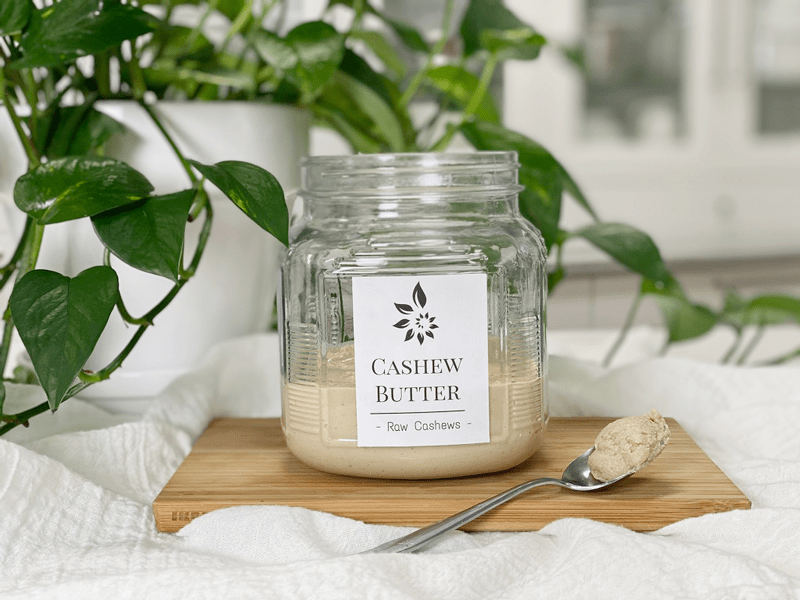
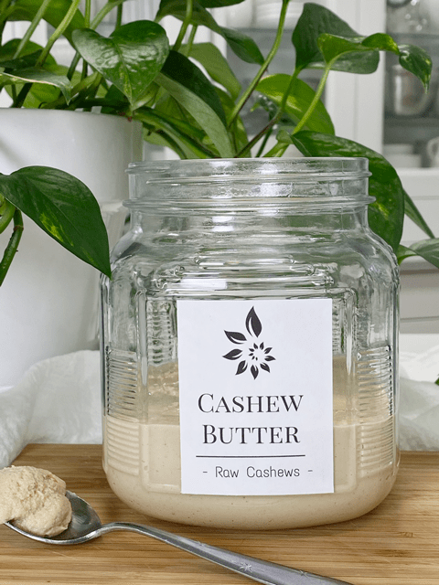
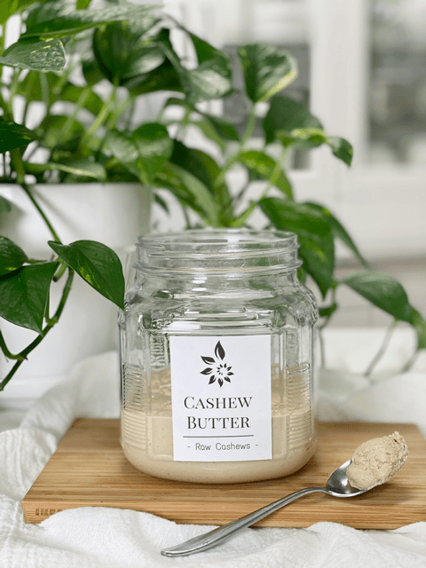

Creamy Cashew Butter
I realize that this recipe seems too simple to post, but I have to ask, “Have you ever made cashew butter?” If not, then this post will teach you a thing or two. Nut butters are very easy to make, but they like to trick you into thinking that you are doing something wrong, and if you follow the steps listed below, you won’t be.

Have you ever had cashew butter? It has a slightly sweet neutral taste … if you know what RAW cashews taste like, then you will understand what it tastes like in this creamy form. Raw cashews taste different from roasted, so keep that in mind. There are SO many ways to dress up this recipe, but I wanted to share with you how to make simple cashew butter. You can add cinnamon, nutmeg, pumpkin spice, sweeteners, etc. It just depends on how you plan on using your creation.
How to Use Cashew Butter
- Make a cashew butter and jam sandwich.
- Spread on celery sticks with dried cranberries on top.
- Add a tablespoon to your shake to increase creaminess.
- Use it in frosting and cheesecake recipes.
- Add a dollop to your oatmeal for rich creaminess.
- Thin it out, add some spices to make a salad dressing.
Nut Butters are Magicians
It’s true if you have ever made them, you will agree with me. The reason I say this is because, during the process of making them, they go through many different stages. And at one point, you will throw your hands up in the air, thinking you gone and done something wrong (spoken with a Souther draw). They go from a whole nut to a powder. From powder to a chunky cluster. From a cluster to one massive ball. Finally from that massive ball to creamy cashew butter.

What You Need
High-Powered Food Processor
- First and foremost, you will need a quality food processor, one that is high-powered. If you don’t, a few things can happen; it could take much longer, and the machine could easily overheat.
- In the Reference Library, I did a section on all the equipment I recommend, click (here) if interested.
- Under Food Processors, I share about the one use, why, and what to look for when shopping for one, along with other tips and tricks.
Patience
- I tried to locate where you could purchase an extra dose of this on Amazon, but I couldn’t find any. Haha, Joking aside, it really does take a bit of patience. With my machine, it took 10 minutes and 30 seconds (of course, I timed it!).
- A person can use a blender IF you have the right one. I have used my Blendtec blender along with the nut butter container, which makes about one cup at a time and is much quicker. But not everyone has those, and I would rather have you invest in a good food processor if you are starting out because you can do so much with it.
Unsoaked Cashews
- Before I get into why I used unsoaked cashews, it vital to use fresh-tasting cashews. Nuts are high in fat and can go rancid, so always always always test them before doing anything with them.
- If you want to learn something really mind-blowing… check out my post called Cashew Fruit to learn how they grow and how they are harvested.
- Whenever I use nuts and seeds in my recipes, I always suggest soaking them to help reduce phytic acid and enzyme inhibitors, which can negatively affect your tummy. If the recipe is “wet,” you only need to soak them. But when it comes to nut butter, you NEVER want to start with wet nuts. I have tried it (the things I do for you, haha), and it turned into a big unsuccessful mess.
- Cashew is one of the few “nuts” that can be a little funky if you soak and dehydrate them, and since I don’t eat it very often, I find that it doesn’t bother me to skip that process. If you chose to roast the cashews or any other nut/seed for butter… then, by all means, do so. They taste wonderful, but they will have fewer nutrients in them.
I will be posting quite a few pictures below throughout the process. I had to stop my machine about every minute to a minute in half to scrape down the sides of the machine. When I did, I used it as an opportunity to snap a picture for you. Remember, the timing that I indicate on my photos may vary a bit from your own experience… it all boils down to how much power your food processor has. I just thought you might enjoy seeing the process.
Well, it’s that time! Tie those apron strings and get ready to make some dirty dishes. If you have any questions or comments, please post them below. I love hearing from you. Blessings, amie sue

Ingredients
yields roughly 1 3/4 cups
- 4 cups (510 g) cashew pieces, NOT soaked
- 1 tsp (7 g) Himalayan pink salt
Preparation
- Add the cashews and salt a high-powered food processor fitted with the “S” blade.
- Stop the machine periodically to scrape down the sides of the bowl, to keep everything blending evenly.
- Every machine works differently, so that processing time will always vary. It depends on the strength and size of your food processor and how many nuts you are processing.
- My machine took 10 minutes and 30 seconds, which gave me the perfect consistency.
- Be patient. Remember, the nuts will go from mealy to powdery, to clumpy, to a large ball of dough, before it hits that velvety stage, so be patient.
- No matter how tempting it is, NEVER add water to your nut butter, it will produce a pasty, gritty result and it will spoil quicker.
- I store my butter in the fridge to extend the shelf life and to avoid the nuts from going rancid.
- When stored in the fridge, the butter will become much thicker. If you have the time, you can allow it to warm to room temp to help soften it.
- Be sure to store excess butter in the freezer. Pour the butter into candy molds or ice cube trays. After they are frozen, remove and store in an airtight, freezer-safe container for approximately 4 months. Enjoy right out of the freezer for a mid-afternoon snack.
Don’t pay attention to the timer on my food processor; it kept resetting. I hope this gives you a good visual of what to expect during the process. The best part is licking the spoon in the end.
© AmieSue.com